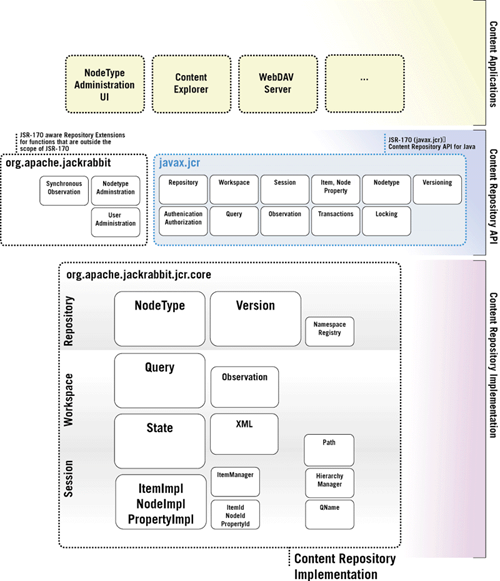

Jackrabbit Architecture
The general architecture of Jackrabbit can be described in three Layers: A Content Application Layer, an API Layer and a Content Repository Implementation Layer.

Content Applications
Content Applications interact through the JSR-170 API with the Content Repository Implementation. There are numerous applications that are available for JSR-170 repositories, some of them are very generic (like a WebDAV server) other applications can be very specific and make use of the content repository as a store for the information that is used by the applications. Java Applications can use a JSR-170 content repository as a replacement for anything from property-files, XML-configuration, certain portions of relational database functionality to straight file system or blob-management. Using a content repository allows an application to deal with an arbitrarily large hierarchical space in a scalable manner automatically profiting from the repository services such as versioning, query, transactions or namespaces which make a content repository an ideal data store for many applications.
A "Generic Content Application" (an application that has no particular functional focus but just allows for generic introspection and manipulation of the repository) uses the capabilities of the node types, access control and other facilities to display a user interface or a network protocol to the end user, seemingly independent from the content that is stored in the repository. Examples of such generic applications are "The Content Explorer", "WebDAV Server" or a "Subversion Server". (Or generic Portal, CMS or DMS applications).
A "Specialized Content Application" operates under the assumption that there are certain node types that it operates on, and that it is familiar at least partially with the data model exposed by defined node types. Mostly these node types are defined by the application itself and ship with the application. These applications use a content repository as their persistence layer as a natural evolution from the use of an RDBMS or a file system. Examples of "Specialized Content Applications" have a very wide range from a "DVD Collection Management", to a "Message Board", to "Workflow and BPM" but also possibly complete next generation "Enterprise Resource Planning Systems".
Content Repository API
The Content Repository API Layer is split into two major sections.
- The Content Repository API defined by JSR-170
- A number features of a content repository, that have been removed from the JSR-170 specification since they are difficult to implement on existing non-java-based content repositories and administrational Repository tasks that have also been deliberately excluded from JSR-170
There are only very few (mostly administrational) applications which make use of the non-JSR-170 APIs provided by Jackrabbit.
The boxes in the architecture chart do not symbolize package names or class names directly but mostly semantically grouped blocks of functionality.
Content Repository Implementation
The content Repository Implementation portion of the architecture chart reflects the major building blocks of the jackrabbit content repository implementation.
The size of the blocks symbolizes roughly the amount of code and therefore the complexity of the individual functional block. Again the functional blocks do not directly map to package or class names.
There are three scopes in a content repository: A repository scope, a workspace scope and a session scope.
Every function that is operated against a repository can be attributed to at least one of these scopes, some functions can operate on more than one scope.
- Repository
- Nodetype
- Version
- NamespaceRegistry
- Workspace
- Query
- Observation
- State
- Xml
- Session
- Path
- HierarchyManager
- QName
- ItemImpl, PropertyImpl, NodeImpl
- ItemId, PropertyId, NodeId
- ItemManager
This is not a complete list but includes some of the most important component of the content repository implementation.